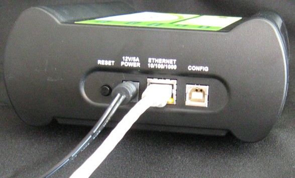

The probe’s default operation is to acquire its network configuration automatically using DHCP, and optionally, attempt to register its hostname with a name server. The factory assigned host name is FSLxxyyzz where xxyyzz is the last three octets of the Ethernet MAC address provided on a label on the bottom side of the probe. For example, if the probe’s Ethernet MAC address is 00:04:9f:00:77:31, the host name is FSL007731.
As shipped, the probe acquires its network configuration automatically using DHCP. If the network has a DHCP server, then it is best to leave the probe configured to use it. If you cannot use DHCP, then you must configure the probe for your network using static IP address resolution. See Using netparam to Configure the Sourcery Probe Professional for details on configuring the probe to use a static IP address.
The Sourcery CodeBench debugger can automatically find probes on the local subnet. However, if the probe is on a different subnet than your computer, for example if it is in the downstairs lab, then you may have to know the probe’s IP address. You can find this using the Sourcery Probe console. See Sourcery Probe Console.
You can connect the probe directly to a network using twisted pair (10/100/1000BaseT) cables.
Procedure
Figure 2‑1. Sourcery Probe Professional with RJ-45 Cable Attached
Notes
Related Topics
To manually configure the network settings of the probe for your network, use the Sourcery Probe Console to access the built-in setup utility, netparam. The netparam utility lets you select and modify network parameters that are saved in probe memory. Use netparam to configure the probe to match your network address resolution and routing protocols, as described in Using netparam to Configure the Sourcery Probe Professional.
If the probe is able to communicate with hosts on other subnets, you will need to configure the probe for one of the following routing options: